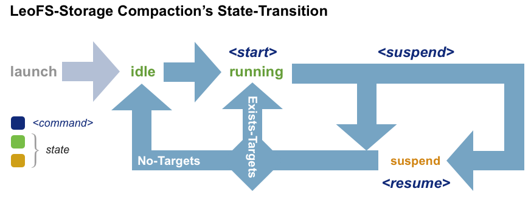

Data Operations¶
This section provides information to operate data stored in LeoFS as well as the prior knowledge that gives you the better understanding about what will happen behind the scene when you invoke a command for a data operation.
Storage Architecture¶
A brief introduction how LeoFS organize data into actual OS files.
Append-Only for Content¶
Once a PUT/DELETE remote procedure call, RPC arrives on LeoStorage appends new blocks including the object information such as the key, data itself and also various associated metadata to the end of a file.
This Append-Only-File we call AVS, Aria Vector Storage which is referenced when retrieving the data through GET RPCs. With its inherent nature of the Append-Only-File, a data-compaction process is needed to clean up the orphaned space in an AVS.
Embedded KVS for Metadata¶
After having succeeded in appending new blocks to an AVS, then leo_object_storage updates a corresponding KVS file with the key and its associated metadata (same information stored in the AVS except for the data itself) and its offset where the new blocks stored in AVS as a value. This KVS file is referenced when retrieving the data/metadata through GET/HEAD RPCs.
Message Queue for Async Operations¶
Some data can be stored into a Queue for processing later in the case
- A PUT/DELETE operation failed
- A Multi DC Replication, MDCR failed
rebalance/recover-(file|node|cluster)invoked through leofs-adm
File Structure¶
Multiple AVS/KVS pairs can be placed on one node to enable LeoFS handling as much use cases and hardware requirements as possible. See Concept and Architecture / LeoStorage's Architecture - Data Structure.
- Container : AVS/KVS pair = 1 : N
- Multiple AVS/KVS pairs can be stored under one OS directory. It is called Container.
- 'N' can be specified through leo_storage.conf.
- How to choose optimal 'N'
- As a data-compaction is executed per AVS/KVS pair, at least the size of a AVS/KVS pair is needed to run data-compaction so that the larger 'N', the less disk space LeoFS uses for data-compaction.
- However the larger N, the more disk seeks LeoFS suffers.
- Tha said, the optimal N is determined by setting the largest value that doesn't affect the online throughput you would expect.
- Node : Container = 1 : N
- Each Container can be stored under a different OS directory.
- N can be specified through leo_storage.conf.
- Setting
N > 1can be useful when there are multiple JBOD disks on the node. The one JBOD disk array can be map to the one container.
Data Compaction¶
This section provides information about what/how data-compaction can affect the online performance.
- Parallelism
- A data-compaction can be executed across multiple AVS/KVS pairs in parallel.
- The number of data-compaction processes can be specified through an argument of leofs-adm.
- Increasing the number can be useful when the load coming from online is relatively low and want a data-compaction process to boost as much as possible.
- Be careful that too much number can make a data-compaction process slow down.
- Concurrent with any operation coming from online.
- GET/HEAD never be blocked by a data-compaction.
- PUT/DELETE can be blocked while a data-compaction is processing the tail part of an AVS.
- Given that the above limitation, We would recommend suspending a node you are supposed to run a data-compaction if a LeoFS system's cluster handles write intensive workload.
How To Operate Data Compaction¶
As described in the previous section, A compaction process is needed to remove logically deleted objects and its corresponding metadata.
State Transition¶

Commands¶
Commands related to Compaction as well as Disk Usage.
| Shell | Description |
|---|---|
| Compaction Commands | |
leofs-adm compact-start <storage-node> (all/<num-of-targets>) [<num-of-compaction-proc>] |
Start Compaction (Transfer its state to running).num-of-targets: How many AVS/KVS pairs are compacted.num-of-compaction-pro: How many processes are run in parallel. |
leofs-adm compact-suspend <storage-node> |
Suspend Compaction (Transfer its state to 'suspend' from running). |
leofs-adm compact-resume <storage-node> |
Resume Compaction (Transfer its state to 'running' from suspend). |
leofs-adm compact-status <storage-node> |
See the Current Compaction Status. |
leofs-adm diagnose-start <storage-node> |
Start Diagnose (Not actually doing Compaction but scanning all AVS/KVS pairs and reporting what objects/metadatas exist as a file). |
| Disk Usage | |
leofs-adm du <storage-node> |
See the Current Disk Usage. |
leofs-adm du detail <storage-node> |
See the Current Disk Usage in detail. |
compact-start¶
1 2 3 4 5 6 7 8 9 10 11 12 | ## Note: ## All AVS/KVS pairs on storage_0@127.0.0.1 ## will be compacted with 3 concurrent processes (default concurrency is 3) ## Example: $ leofs-adm compact-start storage_0@127.0.0.1 all OK ## Note: ## Five AVS/KVS pairs on storage_0@127.0.0.1 ## will be compacted with 2 concurrent processes $ leofs-adm compact-start storage_0@127.0.0.1 5 2 OK |
compact-suspend¶
1 2 3 | ## Example:
$ leofs-adm compact-suspend storage_0@127.0.0.1
OK
|
compact-resume¶
1 2 3 | ## Example:
$ leofs-adm compact-resume storage_0@127.0.0.1
OK
|
compact-status¶
1 2 3 4 5 6 7 8 | ## Example: $ leofs-adm compact-status storage_0@127.0.0.1 current status: running last compaction start: 2013-03-04 12:39:47 +0900 total targets: 64 # of pending targets: 5 # of ongoing targets: 3 # of out of targets : 56 |
diagnose-start¶
See also diagnosis-log format to understand the output log format.
1 2 3 | ## Example:
$ leofs-adm diagnose-start storage_0@127.0.0.1
OK
|
du¶
1 2 3 4 5 6 7 8 9 | ## Example: $ leofs-adm du storage_0@127.0.0.1 active number of objects: 19968 total number of objects: 39936 active size of objects: 198256974.0 total size of objects: 254725020.0 ratio of active size: 77.83% last compaction start: 2013-03-04 12:39:47 +0900 last compaction end: 2013-03-04 12:39:55 +0900 |
du detail¶
1 2 3 4 5 6 7 8 9 10 11 12 13 14 15 16 17 18 19 20 21 22 | ## Example: $ leofs-adm du detail storage_0@127.0.0.1 [du(storage stats)] file path: /home/leofs/dev/leofs/package/leofs/storage/avs/object/0.avs active number of objects: 320 total number of objects: 640 active size of objects: 3206378.0 total size of objects: 4082036.0 ratio of active size: 78.55% last compaction start: 2013-03-04 12:39:47 +0900 last compaction end: 2013-03-04 12:39:55 +0900 . . . file path: /home/leofs/dev/leofs/package/leofs/storage/avs/object/63.avs active number of objects: 293 total number of objects: 586 active size of objects: 2968909.0 total size of objects: 3737690.0 ratio of active size: 79.43% last compaction start: ____-__-__ __:__:__ last compaction end: ____-__-__ __:__:__ |
Diagnosis¶
This section explains the file format generated by leofs-adm diagnose-start in detail.
1 2 3 4 5 6 7 8 9 10 | ## Example: ------+------------------------------------------+------------------------------------------------------------+-----------+------------+------------------+--------------------------+---- Offset| RING's address-id | Filename | Child num | File Size | Unixtime | Localtime |del? ------+------------------------------------------+------------------------------------------------------------+-----------+------------+------------------+--------------------------+---- 194 296754181484029444656944009564610621293 photo/leo_redundant_manager/Makefile 0 2034 1413348050768344 2014-10-15 13:40:50 +0900 0 2400 185993533055981727582172380494809056426 photo/leo_redundant_manager/ebin/leo_redundant_manager.beam 0 24396 1413348050869454 2014-10-15 13:40:50 +0900 0 38446 53208912738248114804281793572563205919 photo/leo_rpc/.git/refs/remotes/origin/HEAD 0 33 1413348057441546 2014-10-15 13:40:57 +0900 0 38658 57520977797167422772945547576980778561 photo/leo_rpc/ebin/leo_rpc_client_utils.beam 0 2576 1413348057512261 2014-10-15 13:40:57 +0900 0 69506 187294034498591995039607573685274229706 photo/leo_backend_db/src/leo_backend_db_server.erl 0 13911 1413348068031188 2014-10-15 13:41:08 +0900 0 83603 316467020376888598364250682951088839795 photo/leo_backend_db/test/leo_backend_db_api_prop.erl 0 3507 1413348068052219 2014-10-15 13:41:08 +0900 1 |
The file is formatted as Tab Separated Values (TSV) except headers (head three lines of a file). The detail of each column are described below:
| Column Number | Description |
|---|---|
| 1 | byte-wise Offset where the object is located in an AVS. |
| 2 | Address ID on RING (Distribute Hash Routing Table). |
| 3 | File Name. |
| 4 | The Number of Children in a File. |
| 5 | File Size in bytes. |
| 6 | Timestamp in Unix Time. |
| 7 | Timestamp in Local Time. |
| 8 | Flag (0/1) representing whether the object is removed. |
Recover Objects¶
This section provides information about the recovery commands that can be used in order to recover inconsistencies in a LeoFS cluster according to failures.
Commands¶
| Shell | Description |
|---|---|
leofs-adm recover-file <file-path> |
Recover the inconsistent object specified by the file-path. |
leofs-adm recover-disk <storage-node> <disk-id> |
Recover all inconsistent objects on the specified disk in the specified storage-node. Note that this command can be used ONLY in case all LeoStorage have the same obj_containers configuration. |
leofs-adm recover-ring <storage-node> |
Recover RING, a routing table of the specified node of the local cluster |
leofs-adm recover-node <storage-node> |
Recover all inconsistent objects in the specified storage-node. |
leofs-adm recover-cluster <remote-cluster-id> |
Recover all inconsistent objects in the specified remote cluster (NOT the local cluster) in case of using the multi datacenter replication. |
recover-file¶
1 2 3 | ## Example:
$ leofs-adm recover-file leo/fast/storage.key
OK
|
recover-disk¶
1 2 3 4 5 6 7 8 9 10 11 12 13 14 | ## Note: ## If you have the following configuration in leo_storage.conf ## obj_containers.path = [./avs1,./avs2] ## then the below command will recover files stored under ./avs1 ## Example: $ leofs-adm recover-disk storage_0@127.0.0.1 1 OK ## Note: ## If you want to recover files stored under ./avs2 ## then issue the below one. ## Example: $ leofs-adm recover-disk storage_0@127.0.0.1 2 OK |
recover-node¶
1 2 3 | ## Example:
$ leofs-adm recover-node storage_0@127.0.0.1
OK
|
recover-cluster¶
1 2 3 4 5 6 | ## Note: ## If your LeoFS already uses the multi data center replication, ## you can execute this command. ## Example: $ leofs-adm recover-cluster remote-leofs OK |
Use Cases¶
When/How to use recover commands.
- AVS/KVS Broken
- Invoke
recover-nodewith a node having broken AVS/KVS files orrecover-diskwith a disk having broken AVS/KVS files if you have multiple container directories.
- Invoke
- Queue Broken
- Invoke
recover-nodewith every node except which having broken Queue files. - The procedure might be improved in future when issue#618 solved.
- Invoke
- Disk Broken
- Invoke
suspendwith a node having broken Disk arrays and subsequently runleo_storage stop. - Exchange broken Disk arrays.
- Run
leo_storage startand subsequently Invokeresumewith the node. - Invoke
recover-nodewith the node orrecover-diskwith the broken disk if you have multiple container directories.
- Invoke
- Node Broken
- Invoke
detachwith a broken node. - Prepare a new node that will take over all objects assigned to a detached node.
- Invoke
rebalance.
- Invoke
- Source/Destination Cluster Down
- Invoke
recover-clusterwith a downed cluster.
- Invoke
- Source/Destination Cluster Down and delete operations on the other side got lost (compacted).
- Set up the cluster from scratch
- invoke
recover-clusterwith the new cluster - See also issue#636 for more information.
- Regular Scrub
- In order to keep data consistent on the eventual consistent system, The regular scrub should be done.
- So we'd recommend users run
recover-noderegularly while keeping the below cautions in mind,- Run
recover-nodeone-by-one at the off-peak time of your system - When some LeoStorage go down during the recover process, just do it over again once the downed nodes come back
- Generally speaking, it depends heavily on the size of your data and the consistency level(W and D) you chose.
- The lower consistency level you choose, The more frequently you should run
recover-node.
- Run